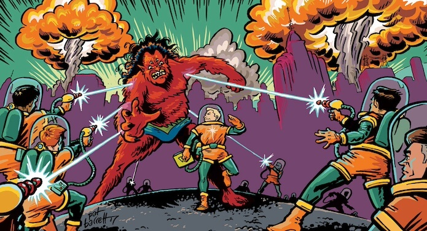
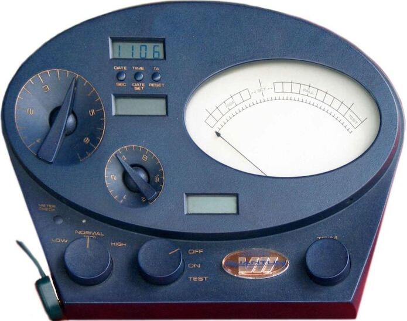

A Scientologist is hired to babysit Tom Cruise’s kids but insists on auditing them before bedtime. The toddlers outsmart them by using their “playtime” to ask questions like, “Why does Scientology have so many rules?” and “Can I get an E-meter for my toys?” The babysitter is left in complete confusion while Tom Cruise is off somewhere jumping on couches, trying to break the space-time continuum.
Notable Improv Scenes
A Scientology employee works a literal toll booth on the Bridge to Total Freedom, charging absurd fees for minor spiritual upgrades. (“Oh, you want emotional stability? That’ll be another $10,000.”) The tollbooth worker hands out a spiritual map that’s just a scribbled napkin, and when the customer protests, they are told that enlightenment only happens if you "pay the toll of self-doubt first."

A character goes to a Scientology-run career center where they can only apply for jobs based on past lives. Turns out, their last three lives were all squirrels, so now they’re only qualified to work as a “tree branch consultant” or “pinecone specialist.” They desperately try to impress the hiring manager, but they can’t stop making acorn jokes.

The alien overlord Xenu holds a corporate meeting to improve efficiency in soul-trapping operations, but his underlings keep complaining about overtime and lack of dental benefits. He insists that all soul contractors should "get their thetans together" and “manifest their freedom,” but one employee just wants more vacation days—unfortunately, they’re stuck in a cosmic “business casual” outfit for eternity.

A confused Scientologist calls tech support because their E-Meter is acting weird. The tech rep insists they try unplugging their soul and plugging it back in. The rep then suggests the customer may have "ghosted" their own E-Meter, and the only solution is a $2,000 soul-cleansing ritual that can only be done during a full moon while singing "Kumbaya."
Two past-life Thetans awkwardly flirt on a cosmic dating app, trying to find the perfect reincarnation partner. One of them was a medieval knight in their last life, the other was a particularly aggressive houseplant. As they swap stories about their past lives, they discover they both got stuck in the same regrettable soul cycle where they were both once the same guy—just in different eras of bad fashion.